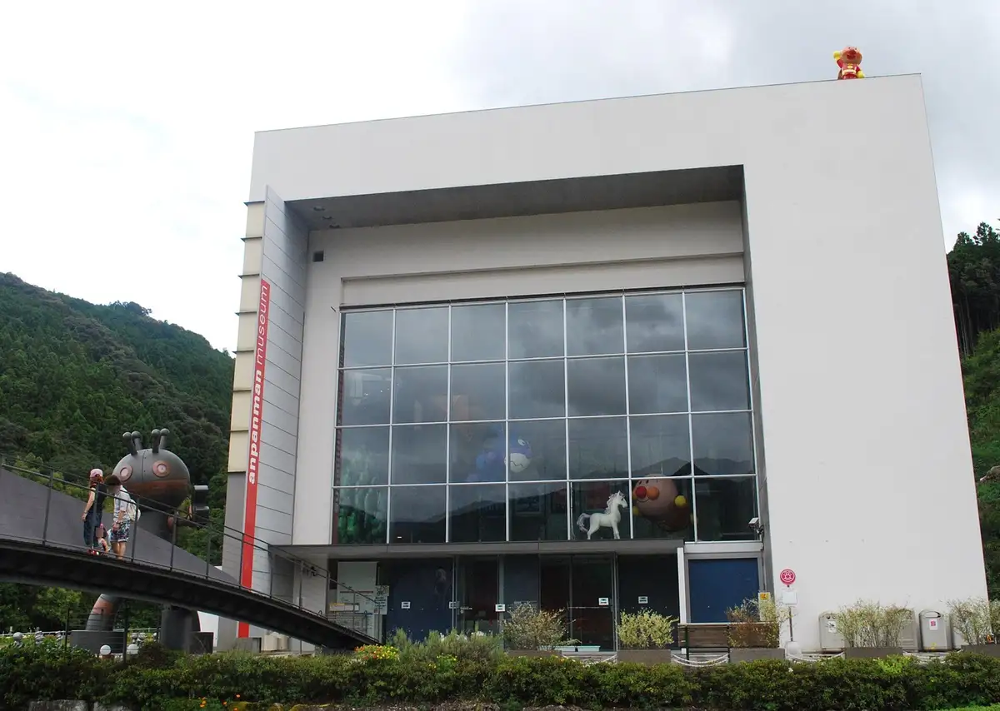
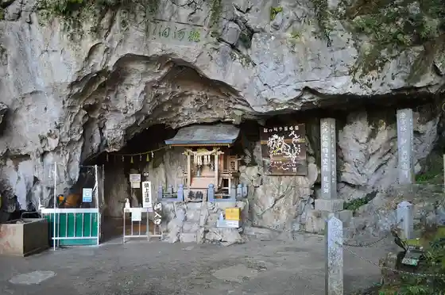
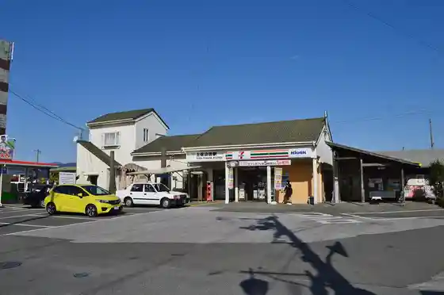
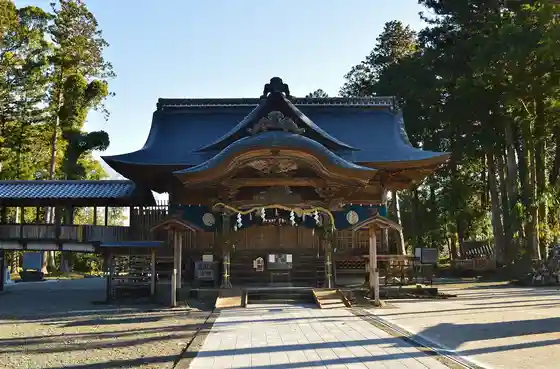
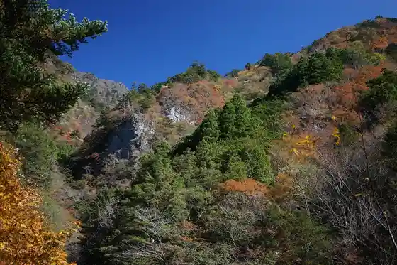

Kami, Kochi
Kami · Kochi
Kami
Highlighted on the Kochi map.

Stay
Za Shikkusudaiarii Kahoku Hotel Ando Resort
Mononobe Kawa no Hotori no Onsen Yado Yume no Onsen
Iyashi no Yuyado Ryuga Onsen
Hotto Hirayama
Lakeside Yu
ahacco Birafu
Dining
TOSACO TAP STAND
Teuchi Chi Soba Sekishu
Sakae
Rafudippu
Nira Nama Village Miyoshi Nuno Chokuhanten
Marushin
I no Naka no Kawazu
Daimon
Ryuga Onsen
BAKE SHOP Hijiri
Heike no Chaya
Marisoru
Kitchin Nira Nama Village
Roiyaruniboshikohiisutando
Ritoru Garden Teien Kissa
Mitani Miito
Experience
Roadside Station Miyoshi Nuno
Sights
Kami Ritsu Yanasetakashi Memorial Museum
Ryuga Hora

Tosayamada Eki

Okawa Ue Miyoshi Nuno Shrine

Befu Kyo

Shigeto Eki